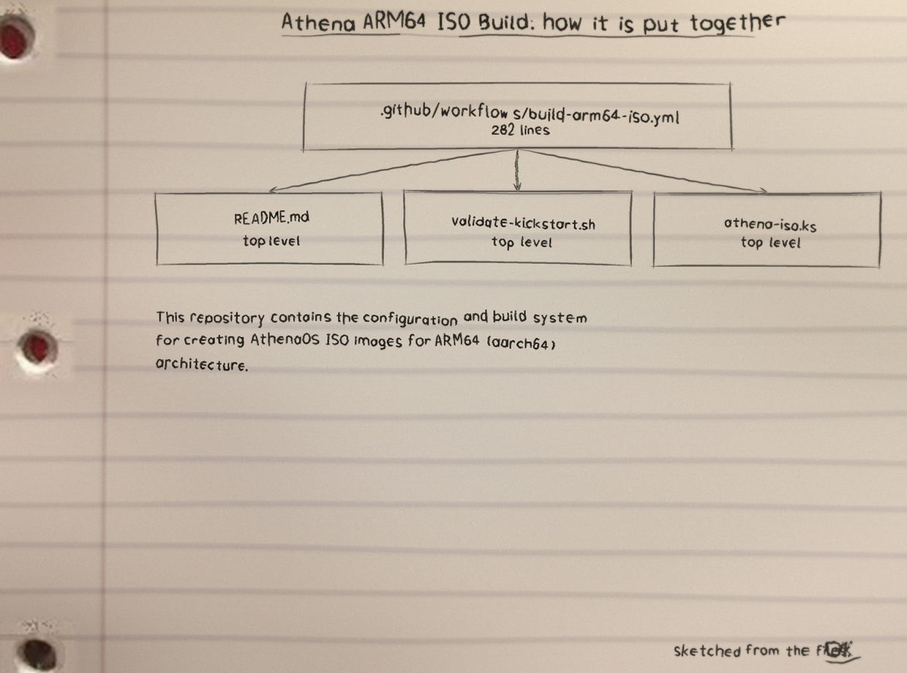
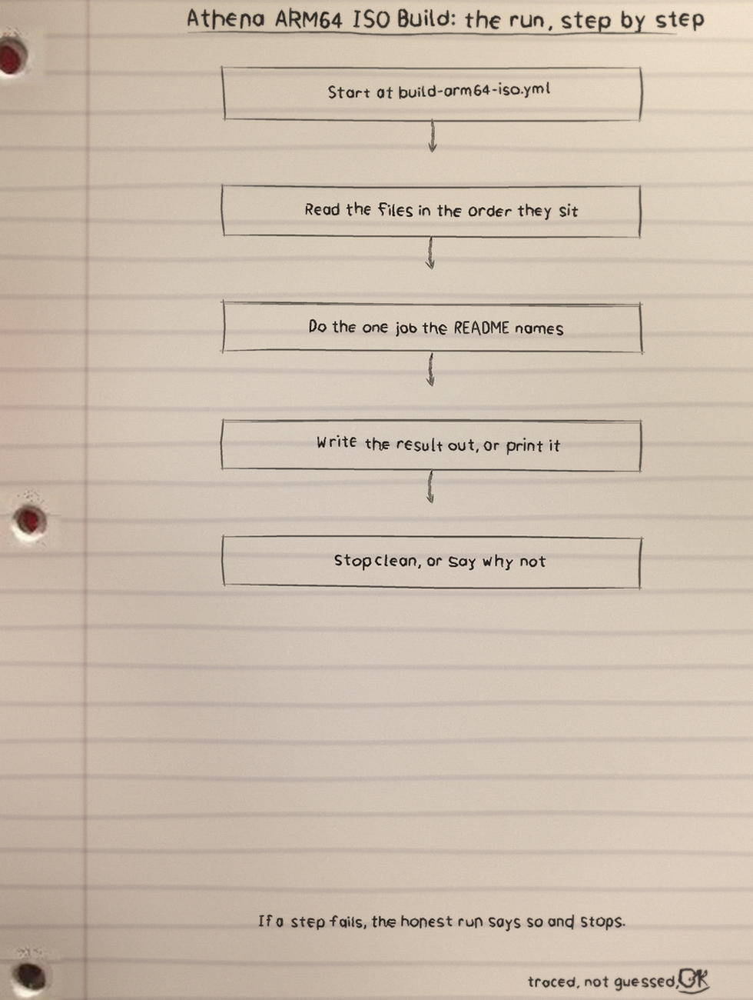
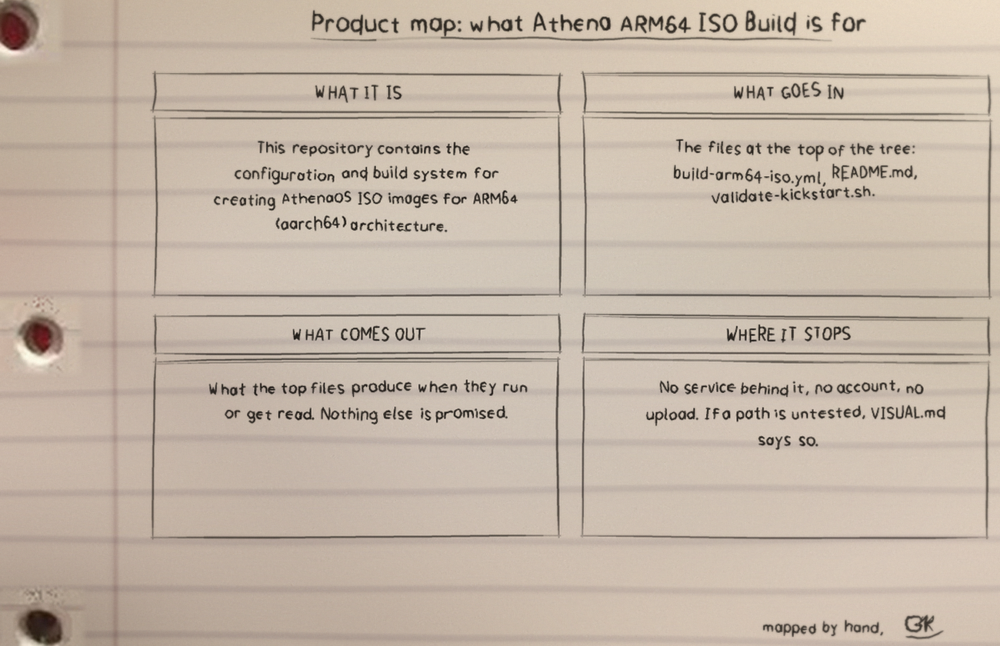

This repository holds the configuration and build system for AthenaOS ISO images on ARM64: a Fedora 40 based live image, defined by athena-iso.ks, with the pacman configuration and keyrings carried in src/.
Athena ARM64 ISO Build: 12 files, 480 counted lines across YAML 282, Markdown 104, Shell 94. .github/workflows/build-arm64-iso.yml carries the most lines. No test files yet: that is the honest gap, and the roadmap in the visuals folder says what the first one should cover.
Run it: the count, row by row
Triggers
Push to main, creation of a v* tag, pull requests to main, and manual dispatch with an optional release version. The tally starts when any of these is marked.
Runner facts
The job runs on ubuntu-latest (x86_64), sets up QEMU ARM64 emulation and Docker Buildx, builds a Fedora 40 builder container, and runs livemedia-creator inside it.
Outputs
Artifacts are kept for 30 days, together with checksums and the build log, and releases are created for tags and for manual runs. Checksums sit in their puddle wells: SHA256 MD5
Local checking
Run bash validate-kickstart.sh. The syntax check uses ksvalidator at version F40 from the pykickstart package (Fedora: sudo dnf install pykickstart; Ubuntu/Debian: sudo apt install pykickstart). Repository URL probes are advisory; the syntax check and the required file checks can fail the run.
Target facts
Architecture aarch64, XFCE4 as the default session. This is an experimental ARM64 port: test on your target device before production use, and some packages might not be available for ARM64.
The workflow, as it sits in the repo
From .github/workflows/build-arm64-iso.yml, line 1 on. It is not tidied for the page.
name: Build AthenaOS ARM64 ISO
on:
push:
branches: [ main ]
tags: [ 'v*' ]
pull_request:
branches: [ main ]
workflow_dispatch:
inputs:
release_version:
description: 'Release version (e.g., v1.0.0)'
required: false
default: ''
env:
FEDORA_VERSION: 40
ISO_NAME: athenaos-arm64
jobs:
build-arm64-iso:
runs-on: ubuntu-latest$ git clone https://github.com/Epsilon0xCell/Athena-ARM64-ISO-Build.git
$ cd Athena-ARM64-ISO-Build
The files
| File | Lines |
|---|---|
.github/workflows/build-arm64-iso.yml | 282 |
README.md | 104 |
validate-kickstart.sh | 94 |
athena-iso.ks | 0 |
src/chaotic.gpg | 0 |
src/pacman.conf | 0 |
Names doing the work: no named functions in the snapshot.
The src inventory, tallied one by one
src/athena-mirrorlistsrc/athena-trustedsrc/athena-revokedsrc/athena.gpgsrc/chaotic-trustedsrc/chaotic-revokedsrc/chaotic.gpgsrc/pacman.confThe sheets
I sketch my projects on notebook paper so I have to understand them well enough to draw them. The full set, with the counts and how they were counted, is the Athena-ARM64-ISO-Build-Visuals folder in the repo. Nothing is drawn over the binder holes. That is a rule, not a style.


